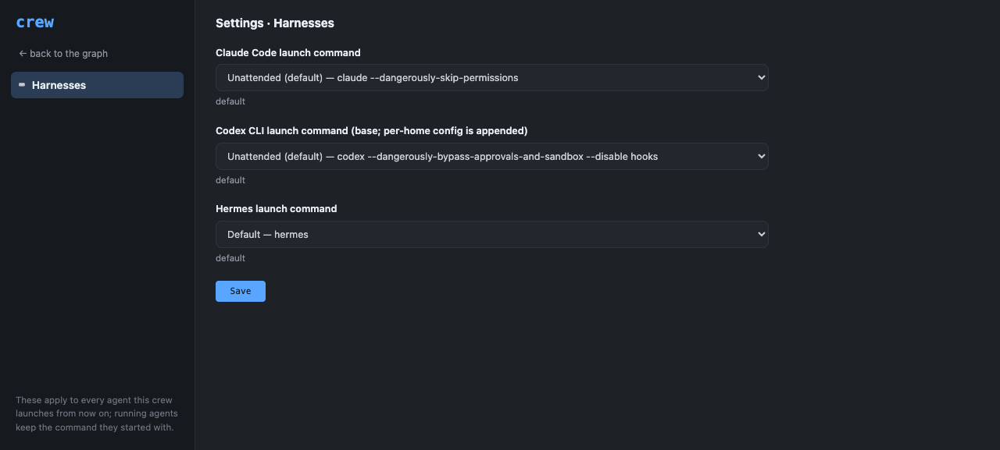
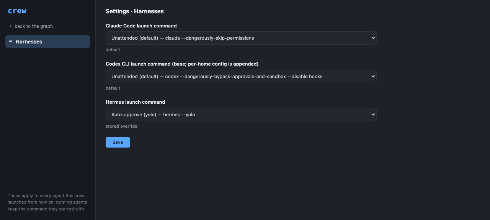

A crew-wide settings page: durable operator-set configuration starting with the launch command for each coding harness (Claude Code, Codex, Hermes), editable from the dashboard and CLI with built-in defaults and env overrides shown honestly.
Feature IDcrew-settings
Created2026-07-27
Surfacescli, dashboard
Dependenciesnone
User flow
Start state
The command each
harness launches with is frozen into the dashboard/CLI process from
env vars at import. Changing how new Claude Code, Codex, or Hermes
agents start means exporting CREW_*_LAUNCH_CMD in the
right shell and restarting the dashboard — there is no place to see
the current commands, let alone change them.
Outcome
The operator clicks
⚙ settings in the dashboard header and lands on a full
settings page (/?view=settings) with a left sidebar of
tabs — Harnesses first. Each harness is an enum with a SELECT of
curated launch-command choices (never a typable shell field);
picking a non-default choice stores it, picking the default clears
the override. The next spawned or revived agent uses it — no
restart. crew settings list shows the same values with
their source (env / settings /
default), and crew settings set|clear
accepts exactly the same menu from the terminal.
Architecture
Both write surfaces are human-gated (operator capability on
the dashboard, live-pane actor identity in the CLI) and converge on
one store, var/settings.json, written atomically under
the same owner-only lock discipline as the project registry. Reads
are live with per-key precedence env > stored >
built-in default, so a saved launch command reaches the very next
spawn or revive without restarting the long-running dashboard.
Public interface
Commands and APIs
crew settings list [--json],
crew settings set <key> <value>,
crew settings clear <key>;
dashboard GET /api/settings and
POST /api/settings/update (operator cookie + CSRF
header), and the ⚙ settings header button opening the
full settings page. Every row carries its choices menu
([{label, command}], first entry the default) and a write must name
one of those commands. Keys:
claude_launch_cmd, codex_launch_cmd (base
command — per-home trust/env config is still appended at spawn),
hermes_launch_cmd. In Python,
crew.settings.launch_cmd(runtime) is what
crew.runtime resolves through.
Data and lifecycle
One flat JSON
object of known keys in var/settings.json, holding only
explicit overrides — defaults are never written, so clearing a key
(or picking the default choice) deletes it and the built-in default
(from crew.config) shows through. A write must equal
one of the key's curated choice commands, every one of them vetted
against the real CLI and checked at import; a value stored before a
menu tightened still reads back verbatim, because a read that
reverted to the default would swap a crew's launch command out from
under it. Stored overrides apply
to future spawns and revives; rows already stored on agents keep
their recorded command. On revive, a Codex row in Crew's exact
generated shape under the current base is regenerated with fresh
context; anything else — custom commands, and rows generated under a
previous base — is fail-safe and preserved byte-for-byte, because a
command Crew cannot prove it generated is never rewritten.
Security and failure boundaries
Authority
A stored launch command
runs verbatim in every future agent pane, so writing one is running
code as the operator. Two independent gates therefore apply: writes
are human-only on both surfaces (guard op
settings_write in HUMAN_ONLY_OPS for the
CLI — actor identity from the live tmux pane, not env — and the
operator capability cookie plus CSRF/Origin checks on the
dashboard), and even a human can only store a command from the
curated menu — arbitrary shell lines are not storable from any
surface. The env vars remain a deliberate per-process escape hatch
that skips the menu. Reads are open — launch commands are not
secrets.
Failure behavior
Corrupt or
unrecognized durable state fails closed with
SettingsError — a truncated or hand-mangled store
surfaces as a clean CLI/API error instead of silently reverting a
configured command to defaults. Writes go through the same
owner-only flock + atomic mkstemp/fsync/
rename path as the project registry, so a crashed
writer can never leave a half-written store. A set-but-empty env
override counts as unset instead of launching an empty
command.
Rollout and reversal
Fully backward compatible: with no store present,
every read resolves exactly as before (env var, else built-in
default), and the import-frozen config.*_LAUNCH_CMD
constants remain for older importers. Env vars keep winning over the
store, so existing scripted setups change meaning in only one safe
direction — a set-but-empty env var no longer launches an empty
command. Reversal: crew settings clear per key, or delete
var/settings.json; reverting the commit restores the
import-frozen resolution with no data migration in either
direction.
claude_launch_cmd (default): claude --dangerously-skip-permissions; codex_launch_cmd (default): codex --dangerously-bypass-approvals-and-sandbox --disable hooks; hermes_launch_cmd (default): hermes — every key answers with its built-in default and names its source.
./bin/crew settings set hermes_launch_cmd 'hermes --yolo'
set hermes_launch_cmd = hermes --yolo (an on-menu choice); settings list then shows hermes_launch_cmd (settings): hermes --yolo while claude and codex stay (default). Picking the default choice on the settings page — or settings clear — returns it to (default): hermes.
./bin/crew settings set hermes_launch_cmd 'hermes --tui'
Refused: setting 'hermes_launch_cmd' must be one of its choices: 'hermes', 'hermes --yolo', 'hermes --continue' — arbitrary shell lines are not storable from any surface; only the curated menu is.
With the 'hermes --yolo' override stored, the spawned agent's durable row recorded launch_cmd 'hermes --yolo' — the chosen menu entry reached a real spawn write. The fixture agent was removed afterward and the override cleared.
200 with ok true and three settings rows (claude, codex, hermes), each carrying key, label, default, override, effective, source, and its choices menu ([{label, command}, ...], first entry the default). The same GET without the operator cookie is 403.
Ran 58 tests — OK. Hermetic (temp store, launch env cleared): defaults, env-over-stored precedence, choice-membership writes, menu vetting at import, legacy stored values honored on read, corrupt-store reads failing closed, runtime wiring, revive fail-safety across base changes, the human-only guard op, and the CLI handlers.
cd frontend ; npm test
6 files, 40 tests, all passing — including tests/settings_page.test.jsx (18 tests: selects render every choice with the right one selected, default-choice saves clear the override, only changed keys are written, legacy off-menu overrides render as a custom option, partial-failure honesty, load-failure shape).
python3 -m unittest discover tests
Ran 1295 tests at the delivered tree. The three failures and one error are pre-existing on main or environmental (two dashboard baseline tests, the live-foreman fixture, the public-URL webhook test that fails while an ingress tunnel runs); every settings suite, including the 7-test SettingsAPI class, passes. No regressions.
python3 scripts/validate_feature_docs.py
feature HTML valid: 6 record(s), template present

The full settings page (/?view=settings) at the tested revision: left sidebar with the Harnesses tab and a back link, and one select per harness showing its curated launch-command choices with the default selected — no typable field anywhere.

The same page after saving the Auto-approve (yolo) choice for Hermes: its select shows the stored menu entry with a 'stored override' hint while claude and codex stay on 'default' — matching crew settings list on the CLI.
Engineering inventory and redaction notes
Declared code: the settings store with its curated choice menus
vetted at import (crew/settings.py), the shared var-file
lock/atomic-write helpers it reuses (crew/config.py), the live
launch-command resolution (crew/runtime.py), the human-only guard
op (crew/guard.py), the CLI command (crew/cli.py), the two
dashboard endpoints (crew/server/app.py), the full settings page
with its sidebar tabs plus the header navigation and view switch
(frontend/src), the rebuilt bundle (static/), and the README
browser-workflow inventory line. Declared tests: 58 hermetic unit
tests, the isolation fix in tests/test_runtime.py (its codex
fixtures resolve through the settings store and a temp VAR so a
developer's real override can't fail them), the 7-test
SettingsAPI class against an isolated live dashboard, 18 vitest
specs for the page, and the executable browser script. Every
choice command was verified against the real claude/codex/hermes
CLI help before being encoded. Fixtures: one --no-launch hermes
agent (removed) and one hermes_launch_cmd override (cleared) —
the shared store was returned to all-defaults and re-verified.
Screenshots were captured after capability bootstrap stripped the
URL fragment, so no capability, cookie, or secret appears; the
API transcript uses the placeholder crew-operator-cookie.
Independent adversarial review came from the test-writing agents,
whose findings (a test-suite landmine on stored codex overrides,
a dead validation branch, a prefix-shaped test that passed for
the wrong reason) were fixed before delivery.